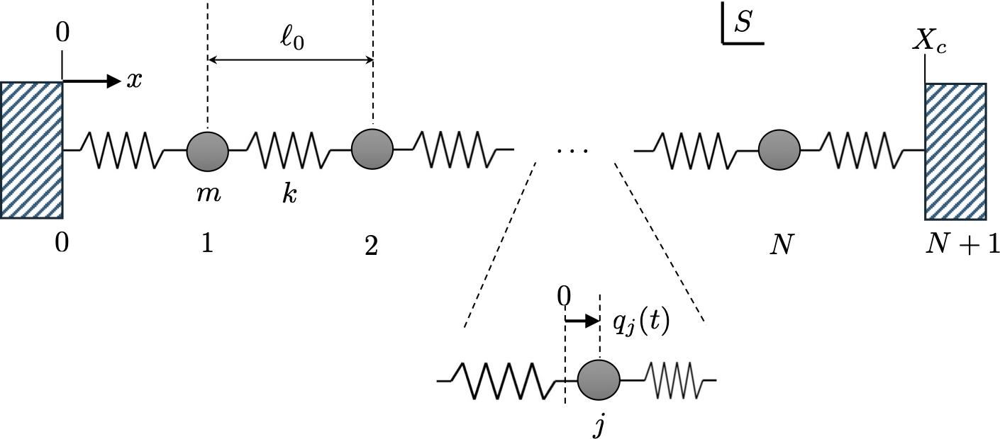
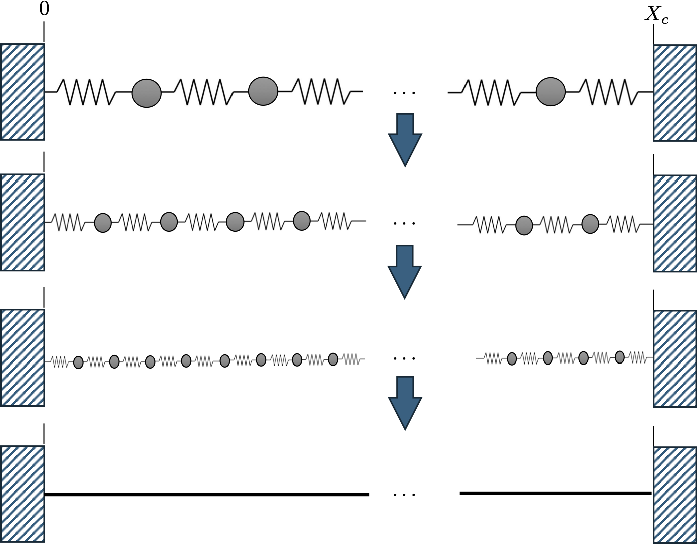
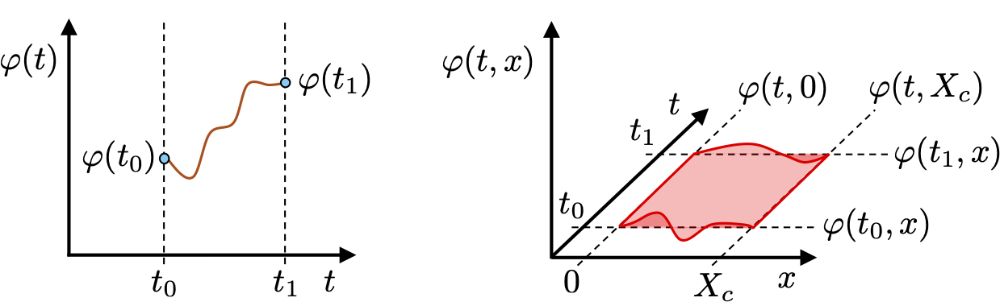
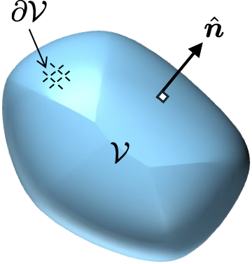
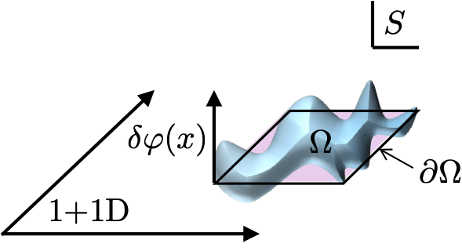
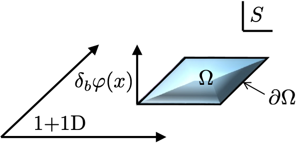

9 Building a field theory
We have spent quite some time now developing the formalism of relativistic fields, but we have yet to actually build a field theory. To do this we will use the powerful tools of Lagrangian mechanics from the first module of this course and generalise in this lecture to continuous relativistic systems.
9.1 Lagrangians for many coordinates
To start suppose we have a system described by \(N\) generalised coordinates \(q_j(t)\) and their derivatives \(\dot{q}_j(t) = \frac{\rm d}{{\rm d}t}q_j(t)\). The dynamics of this system are then controlled by its Lagrangian. Formally the Lagranian \(L(t)\) is only a function only of time \(t\) which is the independent variable. However, we separate out any explicit dependence on time \(t\) it has and its implicit dependence through the set of coordinates \(\{q_j(t)\}\) and derivatives \(\{\dot{q}_j(t)\}\), by writing it as \[ L(t,\{q_j(t)\},\{\dot{q}_j(t)\}). \] The Lagrangian has units \(\tt [energy]\). From it we compute the value of the action by integrating over the time as \[ \mathcal{S}[\{q_j(t)\}] = \int_{t_0}^{t_1} {\rm d}t\, L(t,\{q_j(t)\},\{\dot{q}_j(t)\}). \] The action is a functional so we use the \([\cdots]\) notation. This means it takes as an input all \(N\) coordinates \(q_j(t)\) which are functions of time and returns a scalar value. The action has units \(\tt [energy \times time]\). For brevity we will drop the set notation and often the time dependence for the coordinates \(\{q_j(t)\}\) and just write \(L(t,q_j,\dot{q}_j)\) and \(\mathcal{S}[q_j]\).
The principle of stationary action states that the time-dependence of the coordinates \(q_j(t)\) that the system will exhibit in its dynamics will be the one which makes the action \(\mathcal{S}[q_j]\) stationary. As you have seen from the first half of the course to achieve stationarity means that each coordinate \(q_j(t)\) must obey an Euler-Lagrange equation \[ \frac{\partial L}{\partial q_j} - \frac{{\rm d}}{{\rm d}t}\frac{\partial L}{\partial \dot{q}_j} = 0. \tag{9.1}\] We can view these equations as a force \(\frac{\partial L}{\partial q_j}\) equaling a rate of change of a “momentum” \(\frac{\partial L}{\partial \dot{q}_j}\).
9.2 Chain of coupled oscillators
To motivate the construction of a field theory we will start by considering carefully a 1D chain of \(N\) masses \(m\) coupled to their nearest-neighbours by springs with a stiffness constant \(k\), as depicted in Figure 9.1. Each mass \(j\) has a coordinate \(q_j(t)\) describing its displacement from its equilbrium position, where \(j=1,2,\dots,N\). We assuming fixed ends points clamped at the ends of the chain where \(q_0(t) = q_{N-1}(t) = 0\) and \(\dot{q}_0(t) = \dot{q}_{N-1}(t) = 0\).

We can easily construct the Lagrangian \(L\) using the total kinetic energy of each mass \[ \text{KE}(t) = \sum_{j=1}^N \frac{1}{2}m\dot{q}_j(t)^2, \] and the total potential energy of each spring \[ \text{PE}(t) = \sum_{j=0}^N \frac{1}{2}k\big(q_{j+1}(t) - q_j(t)\big)^2, \] which gives \[ L(t) = \text{KE}(t) - \text{PE}(t) = \sum_{j=0}^N\left[\frac{1}{2}m\dot{q}_j(t)^2 - \frac{1}{2}k\big(q_{j+1}(t) - q_j(t)\big)^2\right]. \tag{9.2}\] Applying the Euler-Lagrange equations Equation 9.1 to this Lagrangian gives \[ m\ddot{q}_j(t) = k\left[\big(q_{j+1}(t) - q_j(t)\big) - \big(q_j(t) - q_{j-1}(t)\big)\right], \tag{9.3}\] for each mass \(j=1,2,\dots,N\). Of course these equations should be instantly recognizable as Newton’s 2nd law for each mass coupled to two springs.
9.3 Taking the continuum limit
We will now construct a field theory by carefully taking the continuum limit of the chain of masses. This limit is reached by taking \(N \rightarrow \infty\) along with \[ \ell_0 \rightarrow 0, \quad m \rightarrow 0 \quad \text{and} \quad k\rightarrow \infty, \] such that the total mass of the chain \(M_c = Nm\), the total length of the chain \(X_c = (N+1)\ell_0\) and \(Y = k\ell_0\) remain fixed and finite.
So we are squeezing more and more masses into the chain between the fixed end points which correspondingly get closer together, each have less mass, but are coupled by stronger springs as shown in Figure 9.2 below:

To take this limit we start by dividing up the Lagrangian into pieces as \[ L(t) = \sum_{j=0}^N \ell_0 \mathcal{L}_j(t) \] where \(\mathcal{L}_j\) is the Lagrangian per unit length (Lagrangian density) given by \[ \mathcal{L}_j(t) = \frac{m}{2\ell_0}\dot{q}_j(t)^2 - \frac{k\ell_0}{2}\left(\frac{q_{j+1}(t) - q_j(t)}{\ell_0}\right)^2. \] Next, we define intensive continuous quantities:
| quantity | description |
|---|---|
| \(\frac{m}{\ell_0} \rightarrow \rho\) | mass per unit length |
| \(k\ell_0 \rightarrow Y\) | Young’s modulus |
| \(j\ell_0 \rightarrow x\) | spatial position along chain axis |
| \(q_j(t) \rightarrow \varphi(t,x)\) | field of local displacements |
| \(\dot{q}_j(t) \rightarrow \frac{\partial}{\partial t}\varphi(t,x) = \dot{\varphi}(t,x)\) | Time derivative of the field |
| \(\frac{q_{j+1}(t) - q_j(t)}{\ell_0} \rightarrow \frac{\partial}{\partial x}\varphi(t,x) = {\varphi}'(t,x)\) | Space derivative of the field |
These subsitutions imply that the Lagrangian density is given by: \[ \mathcal{L}_j(t) \rightarrow \mathcal{L}(t,x) = \frac{\rho}{2}\dot{\varphi}(t,x)^2 - \frac{Y}{2}\varphi'(x,t)^2, \tag{9.4}\] with the Lagrangian itself as: \[ L(t) = \sum_{j=0}^N \ell_0 \mathcal{L}_j(t) \rightarrow \int_0^{X_c} {\rm d}x\, \mathcal{L}(t,x), \] and the action becoming \[ \mathcal{S}[\varphi] = \int_{t_0}^{t_1} {\rm d}t\, \int_0^{X_c} {\rm d}x\, \mathcal{L}(t,x). \] The continuum limit has therefore changed our action from being a functional of a set of continuous functions of time \(q_j(t)\) to being a functional of one continuous function of both space and time \(\varphi(t,x)\). The question we must now answer is what are the Euler-Lagrange equations for a field?
9.4 Euler-Lagrange equations for fields
We can directly generalise the Euler-Lagrange equations for a discrete system to that required for fields quite straightforwardly. Let’s look closer at an example we know well:

9.4.1 Single-particle classical mechanics
The motion of a single particle with coordinate \(q(t)\), as you have treated many times earlier in the course, can be considered a 1+0D field theory described by \(\varphi(t)\) with a single independent variable \(t\). We have a Lagrangian \(L(t,\varphi,\dot{\varphi})\) and an action \[ \mathcal{S}[\varphi] = \int_{t_0}^{t_1} {\rm d}t\,L(t,\varphi,\dot{\varphi}). \tag{9.5}\] As shown on the left in Figure 9.3 we envisage variations of the field \(\varphi\) between fixed points whereupon applying the stationary action principle yielding \[ \frac{\delta\mathcal{S}}{\delta\varphi} = 0 \quad \rightarrow \quad \frac{\partial L}{\partial \varphi} - \frac{{\rm d}}{{\rm d}t}\frac{\partial L}{\partial \dot{\varphi}} = 0. \tag{9.6}\] This is the Euler-Lagrange equation involving the field, a single independent variable \(t\) and the derivative of the field with respect to it.
9.4.2 One-dimensional string
The end result of taking the continuum limit of the chain of oscillators was a Lagrangian for a one-dimensional string. This is equivalent to a 1+1D field theory described by \(\varphi(t,x)\) in terms of two independent variables \(t\) and \(x\). Generalising Equation 9.5 we write the action of the string as \[ \mathcal{S}[\varphi] = \int_{t_0}^{t_1} {\rm d}t\, \int_0^{X_c} {\rm d}x\, \mathcal{L}(t,x,\varphi,\dot{\varphi},\varphi'), \] where the Lagrangian density is explicitly written as a function of the two independent variables, the field \(\varphi(t,x)\) and its derivatives \(\dot{\varphi}(t,x)\) and \(\varphi'(t,x)\) with respects to both independent variables. As shown on the right of Figure 9.3 the field \(\varphi(t,x)\) is defined inside a space-time region and fixed on the boundaries. Following this we generalise Equation 9.6 as: \[ \frac{\delta\mathcal{S}}{\delta\varphi} = 0 \quad \rightarrow \quad \frac{\partial \mathcal{L}}{\partial \varphi} - \frac{\partial}{\partial t}\frac{\partial \mathcal{L}}{\partial \dot{\varphi}} - \frac{\partial}{\partial x}\frac{\partial \mathcal{L}}{\partial \varphi'}= 0. \tag{9.7}\] Three major changes are apparent compared to Equation 9.6. First, the Lagrangian density rather than the Lagrangian is now the central object and this is a function of both independent variables. Second, given that we have two independent variables the derivatives become partial derivatives - but some care has to be taken interpreting what this means as explained in the box below. Third, we added another term involving the new independent variable \(x\) with the same form as the usual one involving \(t\). This result seems a very natural extension that we might have expected. Nonetheless we can formally derive Equation 9.7 using the calculus of variations for two independent variables approach as you are invited to show.
Let’s go ahead an apply Equation 9.7 to the Lagrangian density for a string \(\mathcal{L} = \frac{\rho}{2}\dot{\varphi}^2 - \frac{Y}{2}\varphi'^2\). We first compute \[ \frac{\partial\mathcal{L}}{\partial\varphi} = 0, \quad \frac{\partial \mathcal{L}}{\partial \dot{\varphi}} = \rho \dot{\varphi}, \quad \frac{\partial \mathcal{L}}{\partial \varphi'} = -Y\varphi'. \] and then obtain \[ - \frac{\partial}{\partial t}\frac{\partial \mathcal{L}}{\partial \dot{\varphi}} - \frac{\partial}{\partial x}\frac{\partial \mathcal{L}}{\partial \varphi'} = -\rho \frac{\partial}{\partial t}\dot{\varphi} + Y\frac{\partial}{\partial x}\varphi' = -\rho\ddot{\varphi} + Y\varphi'' = 0, \] hence \[ \frac{\rho}{Y}\ddot{\varphi} = \varphi''. \] This is the 1D wave equation with a wave speed \(c_s = \sqrt{Y/\rho}\) for compression modes of the string. This is exactly the physics we expect to emerge from a dense chain of coupled oscillators.
For the 0+1D Euler-Lagrange equations the derivative \({\rm d}/{\rm d}t\) is a standard time derivative of a Lagrangian \(L(t)\) that is formally only a function of \(t\). If we choose to write divide up the time-dependence as \(L(t,\varphi(t),\dot{\varphi}(t))\) then it would mean a total time derivative \[ \frac{\rm d}{{\rm d}t}L = \frac{\partial L}{\partial t} + \frac{\partial L}{\partial \varphi}\frac{{\rm d}\varphi}{{\rm d}t} + \frac{\partial L}{\partial \dot{\varphi}} \frac{{\rm d}\dot{\varphi},}{{\rm d}t}, \] where the partial derivative captures the variation in any explicit time-dependence (so field and its derivtaive are held constant), and the additional chain rule terms account for the time-dependence of \(\varphi(t)\) and its derivative.
For 1+1D we instead have a Lagrangian density \(\mathcal{L}(t,x)\) which is formally a function of both \(t\) and \(x\). The derivative \(\partial/\partial t\) in Equation 9.7 is a standard partial derivative of \(\mathcal{L}(t,x)\), meaning it acts on all time dependence in the function with \(x\) held constant. The potential for confusion arises when we again divide up the \(x\) and \(t\) dependence between that which explicitly appears and that which is contained inside the field and its derivatives as \(\mathcal{L}(t,x,\varphi(t,x),\dot{\varphi}(t,x))\). In this context \(\partial/\partial t\) now acts like a “total” partial derivative to give \[ \frac{\partial}{\partial t}\mathcal{L} = \frac{\partial \mathcal{L}}{\partial t} + \frac{\partial \mathcal{L}}{\partial \varphi} \frac{\partial \varphi}{\partial t} + \frac{\partial \mathcal{L}}{\partial \dot{\varphi}}\frac{\partial\dot{\varphi}}{\partial t} + \frac{\partial \mathcal{L}}{\partial \varphi'}\frac{\partial \varphi'}{\partial t}. \] The partial derivative on the righthand side is now of the explicit time-dependence in \(\mathcal{L}\) assuming the field and its derivatives are held constant. We don’t have a new symbol to distinguish this from the actual partial derivative of all \(t\) dependence on the lefthand side besides typesetting them differently as has been done here. In practise confusion is unlikely to occur because it will be clear from context which we mean, and generally for problems we wil encounter \(\mathcal{L}\) will have no explicit time-dependence in any case.
9.5 Action for a relativistic field
We have already encountered fields in a relativistic setting. They are functions of space-time coordinates \(\varphi(ct,x,y,z)\) in some frame \(S\) which we may denote as \(\varphi(x^0,x^1,x^2,x^2) = \varphi(x^\mu) = \varphi(x)\). They are also Lorentz scalar meaning the value at any point in space-time is the same independent on the frame used, so \[ \varphi(x) = \varphi(x^\mu) = \varphi(\Lambda^{\bar \nu}_\mu x^\mu) = \bar{\varphi}(x^{\bar \nu}) = \bar{\varphi}(\bar{x}). \] Generalising from 1+1D to 1+3D means the Lagrangian density is also formally a function of the space-time coordinates \(\mathcal{L}(x)\). We demand it is also a Lorentz scalar function. Again we separate out the dependence of \(\mathcal{L}(x)\) into any explicit dependence on the 4 independent variables \(x^\mu\), the field and its derivatives with respect to the coordinates so it has a form: \[ \mathcal{L}(\overbrace{x^0,x^1,x^2,x^3}^x,\varphi,\overbrace{\partial_0\varphi,\partial_1\varphi,\partial_2\varphi,\partial_3\varphi}^{\partial\varphi}) = \mathcal{L}(x,\varphi,\partial\varphi). \tag{9.8}\] On the righthand side of Equation 9.8 we have introduced a conpact shorthand notation for all these arguments. The action follows as an integral over space-time as \[ \mathcal{S}[\varphi] = \int_{\Omega} {\rm d}^4x\, \mathcal{L}(x,\varphi,\partial\varphi), \] where \({\rm d}^4x = {\rm d}x^0{\rm d}x^1{\rm d}x^2{\rm d}x^3\), and \(\Omega\) is some specified 4-volume of space-time in which the field is defined.
Demanding that \(\mathcal{L}(x)\) be Lorentz scalar guarantees that the action \(\mathcal{S}\) is also Lorentz scalar. This is essential if we ever hope to extract a covariant equation of motion of our field from the action. The proof is straightforward: \[\begin{align} \mathcal{S}[\varphi] &= \int_{\Omega} {\rm d}^4x\, \mathcal{L}(x,\varphi,\partial\varphi), \\ &= \int_{\Omega} {\rm d}^4x\, \bar{\mathcal{L}}(\bar{x},\bar{\varphi},\bar{\partial}\bar{\varphi}), \\ &= \int_{\Omega}\left|\det \frac{\partial x^\mu}{\partial x^{\bar \nu}}\right| {\rm d}^4\bar{x}\, \bar{\mathcal{L}}(\bar{x},\bar{\varphi},\bar{\partial}\bar{\varphi}), \\ &= \int_{\Omega}\left|\det \Lambda^\mu_{\bar\nu}\right| {\rm d}^4\bar{x}\, \bar{\mathcal{L}}(\bar{x},\bar{\varphi},\bar{\partial}\bar{\varphi}), \\ &= \int_{\Omega} {\rm d}^4\bar{x}\, \bar{\mathcal{L}}(\bar{x},\bar{\varphi},\bar{\partial}\bar{\varphi}) = \mathcal{S}[\bar{\varphi}]. \end{align}\] On line two we use the Lorentz scalar property of the Lagrangian density to change the frame it is expressed in \[ \mathcal{L}(x,\varphi,\partial\varphi) = \bar{\mathcal{L}}(\bar{x},\bar{\varphi},\bar{\partial}\bar{\varphi}). \] Next, we change the infinitesmal space-time volume element \({\rm d}^4x\) by introducing the determinant of the Jacobian matrix. The integration 4-volume \(\Omega\) remains unchanged, it is simply specified in new coordinates. The Jacobian here is the Lorentz transformation which, as we have shown before, has a \(\pm 1\) determinant. This is just telling us that space-time volume element has the same 4-volume in any frame. In work-along exercise 2 in the last lecture you would have showed this already. Thus the result follows.
9.6 Divergence theorem in 1+3D space-time
A key tool we will need to understand relativistic actions is the divergence theorem in 1+3D space-time. You have met the divergence theorem (or Gauss’s law) in earlier course on vector calculus and electromagnetism.

Hence in words the volume integral of the 3-divergence of a 3-vector field is equal to the surface integral of the field over the boundary. The divergence theorem is pivotal in electromagnetism. For example the Maxwell equation \(\nabla \cdot \boldsymbol{E}(\boldsymbol{r}) = \rho(\boldsymbol{r})/\epsilon_0\) connecting the divergence of the electric field \(\boldsymbol{E}(\boldsymbol{r})\) to charge density \(\rho(\boldsymbol{r})\) can be reformulated as \[ \int\int\int_{\mathcal{V}} {\rm d}^3\boldsymbol{r}\, \rho(\boldsymbol{r}) = {\subset\!\supset} \mathllap{\iint}_{\partial\mathcal{V}} {\rm d}^2 S \, \hat{\boldsymbol n}\cdot\boldsymbol{E}(\boldsymbol{r}), \] or the total charge enclosed inside \(\mathcal{V}\) is equal to the flux of the electric field through its surface. Another Maxwell equation \(\nabla \cdot \boldsymbol{B}(\boldsymbol{r}) = 0\) is therefore often said to mean there are no magnetic monopoles since no volume can enclose an isolated magnetic charge. We will discuss electromagnetism in much more detail in Part IV of the course.
Mathematically there is nothing special about 3D space with regard to the divergence theorem. It generalises naturally to 4D or 1+3D space-time as:
Crucially the divergence theorem allows us to convert 4-volume integrals into 3-volume surface integral boundary terms, rather like integration by parts does in 1D. This will prove to be an essential observation for the rest of this part of the course.
9.7 Variations of the action
Our first use of the divergence theorem is to arrive at a very useful formulation of the variation of the action. Take a Lorentz scalar field \(\varphi(x)\) defined inside a 4-volune \(\Omega\) and then consider a variation of it \[ \varphi(x) \rightarrow \varphi(x) + \delta\varphi(x), \tag{9.9}\] where \(\delta\varphi(x)\) is taken to be small, so \(|\delta\varphi(x)| \ll |\varphi(x)|\) for all \(x\), but is otherwise an arbitrary and unconstrained variation over \(\Omega\), as depicted in Figure 9.5. The derivative of the field similarly has a variation \[ \partial_\mu\varphi(x) \rightarrow \partial_\mu\varphi(x) + \delta\partial_\mu\varphi(x), \] which if we compare with taking the derivative of Equation 9.9 directly we identify that \[ \delta\partial_\mu\varphi(x) = \partial_\mu\delta\varphi(x). \tag{9.10}\] This means that the variation of the field’s derivative is identical to the derivative of the variation of the field.

We then compute the variation in the action \[ \delta\mathcal{S}[\varphi,\delta\varphi] = \mathcal{S}[\varphi+\delta\varphi] - \mathcal{S}[\varphi], \] which we express in terms of the Lagrangian density as \[ \delta\mathcal{S}[\varphi,\delta\varphi] = \int_{\Omega} {\rm d}^4x\, \left\{\mathcal{L}(x,\varphi+\delta\varphi,\partial(\varphi + \delta\varphi)) - \mathcal{L}(x,\varphi,\partial\varphi)\right\}. \] To make further progress we Taylor expand the varied Lagrangian density to first order in \(\delta\varphi\) the about its unperturbed point as \[\begin{align} \mathcal{L}(x,\varphi+\delta\varphi,\partial(\varphi + \delta\varphi)) &= \mathcal{L}(x,\varphi,\partial\varphi) + \frac{\partial \mathcal{L}}{\partial\varphi}\delta\varphi + \frac{\partial \mathcal{L}}{\partial\partial_\mu\varphi}\partial_\mu\delta\varphi + \mathcal{O}(\delta\varphi^2), \end{align}\] having used Equation 9.10 on the last term. Inserting this then gives \[ \delta\mathcal{S}[\varphi,\delta\varphi] = \int_{\Omega} {\rm d}^4x\, \left\{\frac{\partial \mathcal{L}}{\partial\varphi}\delta\varphi + \frac{\partial \mathcal{L}}{\partial\partial_\mu\varphi}\partial_\mu\delta\varphi + \mathcal{O}(\delta\varphi^2)\right\}. \] Next, we use the following rearrangement which follows from applying the derivative product rule \[ \frac{\partial \mathcal{L}}{\partial\partial_\mu\varphi}\partial_\mu\delta\varphi = \partial_\mu\left(\frac{\partial \mathcal{L}}{\partial\partial_\mu\varphi}\delta\varphi\right) - \left(\partial_\mu\frac{\partial \mathcal{L}}{\partial\partial_\mu\varphi}\right)\delta\varphi. \] Inserting this gives a variation of action and working to first order gives \[ \delta\mathcal{S}[\varphi,\delta\varphi] = \int_{\Omega} {\rm d}^4x\, \left\{\frac{\partial \mathcal{L}}{\partial\varphi}\delta\varphi - \left(\partial_\mu\frac{\partial \mathcal{L}}{\partial\partial_\mu\varphi}\right)\delta\varphi + \partial_\mu\left(\frac{\partial \mathcal{L}}{\partial\partial_\mu\varphi}\delta\varphi\right)\right\} \] The final step is to apply to the divergence theorem to the last term, which is a 4-divergence to arrive at the following result:
9.8 Relativistic Euler-Lagrange equation
Our final task in this lecture is to derive the relativistic Euler-Lagrange equation. Given Equation 9.7 we can guess what form it will take, specifically: \[ \frac{\partial \mathcal{L}}{\partial \varphi} - \frac{\partial}{\partial x^0}\frac{\partial \mathcal{L}}{\partial \partial_0\varphi} - \frac{\partial}{\partial x^1}\frac{\partial \mathcal{L}}{\partial \partial_1\varphi} - \frac{\partial}{\partial x^2}\frac{\partial \mathcal{L}}{\partial \partial_2\varphi} - \frac{\partial}{\partial x^3}\frac{\partial \mathcal{L}}{\partial \partial_3\varphi}= 0, \] where derivative terms appear for each independent variable. Index notation gives this a compact and manifestly relativistically covariant form \[ \frac{\partial \mathcal{L}}{\partial \varphi} - \partial_\mu\frac{\partial \mathcal{L}}{\partial \partial_\mu\varphi} = 0. \] The derivation is quite straightforward. As you saw in the first module of this course on Analytic Mechanics, to derive the Euler-Lagrange equations variations of the coordinates should vanish on the boundary times. In field theory we are free to specify the 4-volume \(\Omega\) on which the field lives and the boundary conditions it must satisfy on the boundary \(\partial\Omega\). For this reason we introduce a constrained form of variation of the field, as shown in Figure 9.6. Specifically,

This means that given a field \(\varphi(x)\) which satisfies the boundary conditions, then the variation of this field \[ \varphi(x) \rightarrow \varphi(x) + \delta_b\varphi(x), \tag{9.13}\] also obeys them. If we apply this class of variation of the field then we can immediately conclude that the boundary term in Equation 9.11 vanishes: \[ \oint{\rm d}^3 S \, n_\mu \frac{\partial \mathcal{L}}{\partial\partial_\mu\varphi}\delta_b\varphi = 0, \] because all the point \(x\) involved in this integral are on the boundary \(\partial\Omega\) where \(\delta_b\varphi(x) = 0\). This reduces the variation in the action to the volume term \[ \delta\mathcal{S}[\varphi,\delta_b\varphi] = \int_{\Omega} {\rm d}^4x\, \left(\frac{\partial \mathcal{L}}{\partial\varphi} - \partial_\mu\frac{\partial \mathcal{L}}{\partial\partial_\mu\varphi}\right)\delta_b\varphi. \] Hamilton’s principle states that the equations of motion governing the field \(\varphi(x)\) inside \(\Omega\) follow from making the action stationary, meaning \(\delta\mathcal{S}[\varphi,\delta_b\varphi] = 0\). However, the 4-volume integral \[ \int_{\Omega} {\rm d}^4x\, \left(\frac{\partial \mathcal{L}}{\partial\varphi} - \partial_\mu\frac{\partial \mathcal{L}}{\partial\partial_\mu\varphi}\right)\delta_b\varphi = 0, \] can only vanish if everywhere inside \(\Omega\) \[ \frac{\partial \mathcal{L}}{\partial\varphi} - \partial_\mu\frac{\partial \mathcal{L}}{\partial\partial_\mu\varphi} = 0, \] since \(\delta_b\varphi(x)\) is arbitrary inside \(\Omega\). This is the relativistic Euler-Lagrange equation:
9.8.1 Key example
The classic example to apply the relativistic Euler-Lagrange equation to first is the free scalar field Lagrangian \[ \mathcal{L} = \partial_\alpha \varphi \, \partial^\alpha \varphi = \eta^{\alpha\beta} \partial_\alpha \varphi \partial_\beta \varphi. \] This Lagrangian involves the square of the time derivative minus the square of the derivative in each direction of space. This is a direct generalisation of Equation 9.4 for a 1D string to 1+3D Minkowski space-time. We immediately have \[ \frac{\partial \mathcal{L}}{\partial \varphi} = 0, \] and proceed to compute \[ \frac{\partial \mathcal{L}}{\partial \partial_\mu \varphi} = \frac{\partial}{\partial \partial_\mu \varphi} \left( \eta^{\alpha\beta} \partial_\alpha \varphi \partial_\beta \varphi\right). \] Since this is the first time we have encountered a derivative like this we will do it very explicitly taking care with the indices. Since the derivative is \[ \frac{\partial \partial_\nu \varphi}{\partial \partial_\mu \varphi} = \delta^\mu_\nu \] we have \[ \frac{\partial \mathcal{L}}{\partial \partial_\mu \varphi} = \eta^{\alpha\beta} \left( \delta^\mu_{\alpha} \partial_\beta \varphi + \partial_\alpha \varphi \, \delta^\mu_{\beta}\right), \] giving \[ \frac{\partial \mathcal{L}}{\partial \partial_\mu \varphi} = \eta^{\mu\beta} \partial_\beta \varphi + \eta^{\alpha\mu} \partial_\alpha \varphi, \] and after using the symmetry \(\eta^{\mu\nu} = \eta^{\nu\mu}\) and relabelling both \(\alpha \rightarrow \nu\) and \(\beta \rightarrow \nu\), we arrive at \[ \frac{\partial \mathcal{L}}{\partial \partial_\mu \varphi} = 2 \eta^{\mu\nu} \partial_\nu \varphi. \] This result is akin to an index version of differentiating \(x^2\) to find \(2x\)! The Euler–Lagrange equation then gives \[ 0 - \partial_\mu\left(2 \eta^{\mu\nu} \partial_\nu \varphi\right) = 0 \quad \rightarrow \quad \eta^{\mu\nu} \partial_\mu \partial_\nu \varphi = 0, \] so we arrive at \[ \partial_\mu \partial^\mu \varphi = 0, \] which is the relativistic wave equation. As expected it generalises our earlier considerations of wave on a string. You are invited to try some more examples.